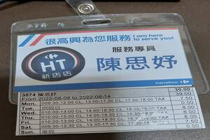
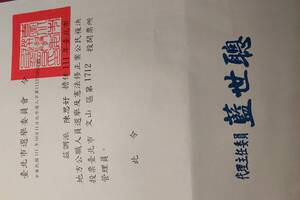

- 姓名:陳思妤
- 班級:資管二乙
- 生日:9月12日
- 興趣:彈鋼琴、看小說
程式技能
python
java
jsp
專業技能
後端網頁
前端網頁開發
介面網頁設計
課程活動
- 管理學:我們這組選擇的服務學習是淨灘，淨灘服務學習是一種有意義且富有成效的活動，讓我能夠親身體驗海洋環境的美麗和脆弱性，同時也能夠體驗到為環境盡一份心力的樂趣。
- 企業概論:因課程的需求，我們跟微熱山丘與普仁基金會合作販賣的蜂蜜脆蛋糕，了解到企業經營的辛苦之處，我們以普仁基金會以普及仁愛為宗旨，主要幫助弱勢兒童，給與他們生活上的援助。
- 後端程式設計:用所學的知識，整合出一個具有前後端網站，經過這次的合作，更了解到了電商平台是如何架設的。
打工經驗
在補習班打電話，邀請同學來上課，在打工的過程中，學習到了注意語氣和態度，保持禮貌和尊重

打工經驗
暑假在賣場打工，要時時刻刻注意顧客的情緒，找零也需要十分注意，如果不小心會從薪水裡扣，體會到服務業的辛苦

打工經驗
當過選務人員，計票、唱票需要小心謹慎，台下有很多圍觀的民眾會指正社團經驗
高中:擔任體育志工，學校的體育項目都是我們要負責的，非常快的熟悉每個體育規則，學會羽球拍的穿線拉磅
大學:參加學校的日向社，認識更多朋友，是一個服務性的社團。